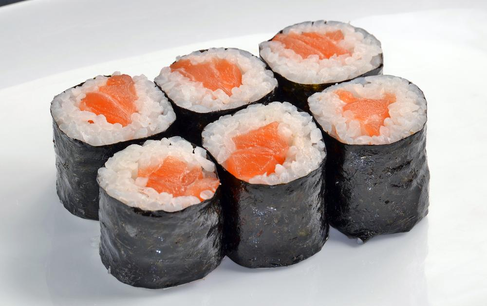
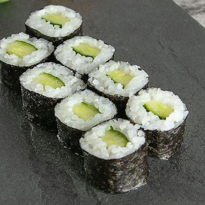

quem gosta desse pelo amor de Deus, com pepino ainda que horror!!
 O Kappamaki é vegetariano, tendo o pepino em tiras como seu principal ingrediente. Ele recebeu este nome em homenagem a um personagem do folclore japonês, que se alimentava apenas de pepino!